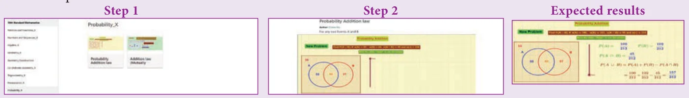
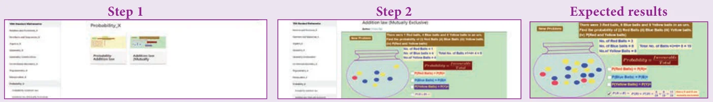

ICT 8.1
Step 1: Open the Browser type the URL Link given below (or) Scan the QR Code. Chapter named “Probability” will open. Select the work sheet “Probability Addition law”
Step 2: In the given worksheet you can change the question by clicking on “New Problem”. Move the slider to see the steps.

ICT 8.2
Step 1: Open the Browser type the URL Link given below (or) Scan the QR Code. Chapter named “Probability” will open. Select the work sheet “Addition law Mutually Exclusive”
Step 2: In the given worksheet you can change the question by clicking on “New Problem”. Click on the check boxes to see the respective answer.

You can repeat the same steps for other activities
https://www.geogebra.org/m/jfr2zzgy#chapter/359554 or Scan the QR Code.